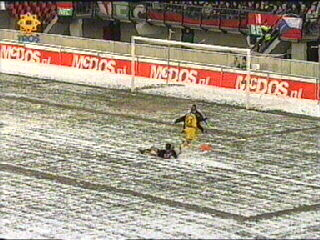
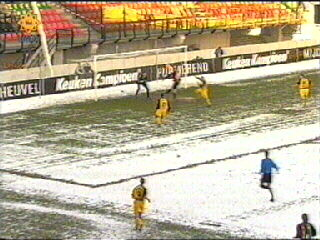
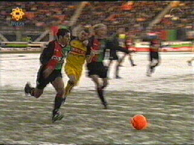

|
NEC - Roda JC 1-0 23 december 2001 |

Kansje voor Berglund uit een pass van Gerrie
Senden in dit "winter wonderland".

In de 9e min. wordt er reeds gescoord door NEC.
Demouge kopte mooi in.

In de 56e min. krijgt Simr de rode kaart na een
vermeende elleboogstoot op Soetaers.
Roda weet daar niet van te profiteren en gaat de
winterstop in met een onverwachte kater.
©KPD